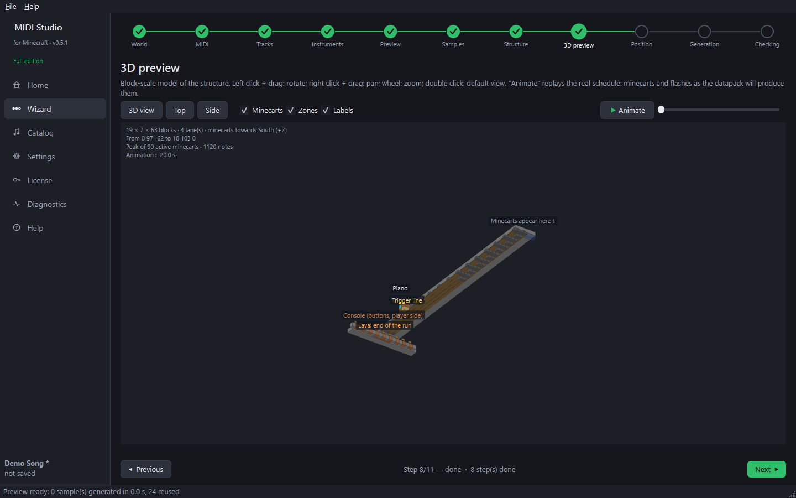
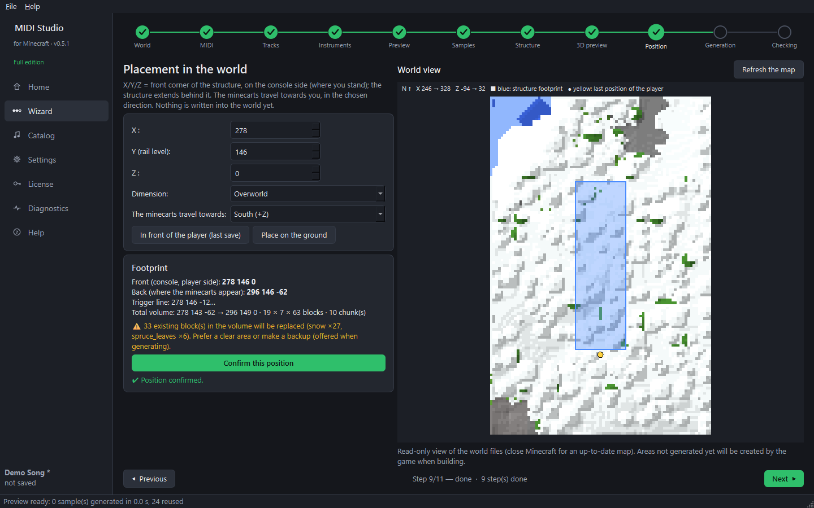

Step 9 — 3D preview and position (wizard steps 8 and 9)
3D preview (step 8)

- Left click + drag: rotate. Right click + drag: move. Wheel: zoom. Double click: default view.
- 3D view / Top / Side: preset views. Layers can be hidden (minecarts, zones, labels).
- Animate replays the real schedule: minecarts and flashes exactly as the datapack will produce them.
Position (step 9)

- X / Y / Z is the front corner of the structure, on the console side, where you stand. The structure extends behind it.
- The minecarts travel towards — the direction the minecarts move (towards you).
- In front of the player (last save) places the console 2 blocks in front of your last saved position, centred on you.
- Place on the ground sets Y just above the highest ground under the structure.
- The World view map (read-only) shows the footprint in blue and your last position in yellow. The number of existing blocks that would be replaced is shown.
- Click Confirm this position.
Tip: close Minecraft before opening this step to see an up-to-date map.
Next guide: generate and install.